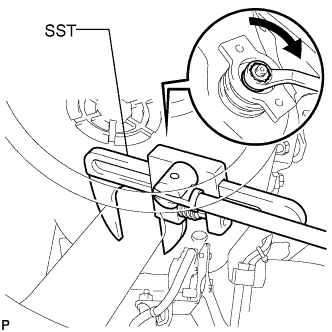
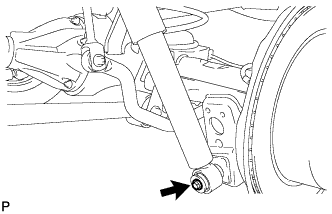
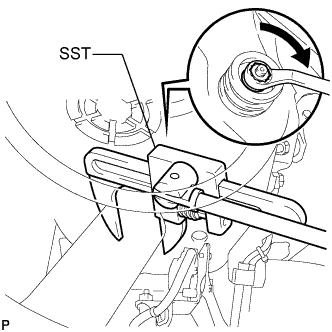
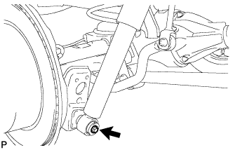
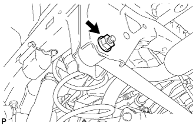
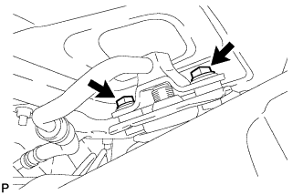
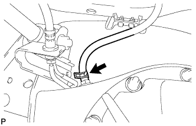

REAR SHOCK ABSORBER > INSTALLATION |
| 1. TEMPORARILY INSTALL REAR SHOCK ABSORBER ASSEMBLY LH (w/ Active Height Control) |
Install the lower bracket to the shock absorber.
 |
Using SST, hold the rear shock absorber in place.
Temporarily install the rear shock absorber and upper bracket with the nut.
 |
Temporarily install the lower side of the shock absorber with the bolt.
| 2. TEMPORARILY INSTALL REAR SHOCK ABSORBER ASSEMBLY LH (w/o Active Height Control) |
Install the lower bracket to the shock absorber.
 |
Using SST, hold the rear shock absorber in place.
Temporarily install the rear shock absorber and upper bracket with the nut.
Temporarily install the lower side of the shock absorber with the bolt.
| 3. TEMPORARILY INSTALL REAR SHOCK ABSORBER ASSEMBLY RH |
 |
Temporarily install the lower side of the shock absorber with the bolt.
| 4. TEMPORARILY INSTALL REAR LATERAL CONTROL ROD ASSEMBLY |
 |
Temporarily install the lateral control rod with the nut and bolt.
| 5. STABILIZE SUSPENSION |
Install the rear wheels.
Lower the vehicle.
Press down on the vehicle several times to stabilize the suspension.
| 6. TIGHTEN REAR SHOCK ABSORBER ASSEMBLY LH |
Tighten the bolt and nut.
| 7. TIGHTEN REAR SHOCK ABSORBER ASSEMBLY RH |
Tighten the bolt and nut.
| 8. CONNECT NO. 4 SUSPENSION CONTROL PRESSURE HOSE (w/ Active Height Control) |
 |
Install the pressure hose with the 2 bolts.
| 9. TIGHTEN REAR LATERAL CONTROL ROD ASSEMBLY |
Tighten the nut.
| 10. BLEED AIR FROM SUSPENSION FLUID (w/ Active Height Control) |
 |
With the engine stopped, fill the reservoir tank with fluid.
With the vehicle on a level surface, start the engine and set the vehicle height to NORMAL with the suspension control switch.
When the vehicle height becomes NORMAL and the pump stops, stop the engine.
 |
Connect a hose to the bleeder plug of the front left side or right side control valve, then loosen the bleeder plug.
After the fluid containing air stops coming out, retighten the bleeder plug.
 |
Connect a hose to the bleeder plug of the rear left side or right side control valve, then loosen the bleeder plug.
After the fluid containing air stops coming out, retighten the bleeder plug.
Repeat the previous 4 procedures until the fluid containing air stop coming out.
| 11. CHECK FLUID LEVEL IN RESERVOIR (w/ Active Height Control) |
 |
With the vehicle empty, after setting the vehicle height to NORMAL from LO, check the indicator to make sure the vehicle height is NORMAL and check that the fluid level in the reservoir tank is within the specified range (MAX, MIN).
| 12. INSPECT FOR SUSPENSION FLUID LEAK (w/ Active Height Control) |
Check that the union nuts shown in the illustration are tightened to the specified torque.
Check for fluid leakage from the parts and connections.

| 13. CONNECT NO. 3 PARKING BRAKE CABLE ASSEMBLY |
Connect the No. 3 parking brake cable with the bolt.
| 14. CONNECT NO. 2 PARKING BRAKE CABLE ASSEMBLY |
Connect the No. 2 parking brake cable with the bolt.
| 15. CONNECT REAR AXLE BREATHER HOSE SUB-ASSEMBLY |
 |
Connect the breather hose to the rear axle housing.
| 16. MEASURE VEHICLE HEIGHT (w/ KDSS) |
Set the tire pressure to the specified value(s) (Click here).
Bounce the vehicle to stabilize the suspension.
 |
Measure the distance from the ground to the top of the bumper and calculate the difference in the vehicle height between left and right. Perform this procedure for both the front and rear wheels.
| 17. CLOSE STABILIZER CONTROL WITH ACCUMULATOR HOUSING SHUTTER VALVE (w/ KDSS) |
Using a 5 mm hexagon socket wrench, tighten the lower and upper chamber shutter valves of the stabilizer control with accumulator housing.
| 18. INSTALL STABILIZER CONTROL VALVE PROTECTOR (w/ KDSS) |
 |
Install the valve protector with the 3 bolts.
Attach the clamp, and connect the connector to the valve protector.